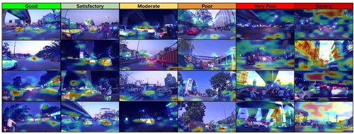
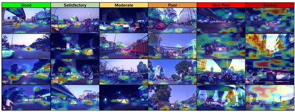

Dataset Overview

Data collection and preprocessing pipeline

Visual spectrum across AQI categories

Comparison with prior datasets
GradCAM interpretability results
TRAQID is a large-scale traffic-centric air quality image dataset containing 26,678 front and rear images paired with co-located PM2.5, PM10, AQI, temperature, and humidity measurements. Collected over 70+ hours across multiple seasons and day-night conditions in Hyderabad and Secunderabad, TRAQID captures real-world unstructured traffic scenarios. The dataset addresses the lack of diversity in existing image-based AQI datasets and serves as a benchmark for vision-based air quality estimation and multimodal learning.
Data collection and preprocessing pipeline
Visual spectrum across AQI categories
Comparison with prior datasets
GradCAM interpretability results
@article{Kathalkar2024TRAQID,
title = {TRAQID - Traffic-Related Air Quality Image Dataset},
author = {Kathalkar, Om Rajendra and Nilesh, Nitin and Chaudhari, Sachin and Namboodiri, Anoop},
year = {2024},
journal = {Indian Conference on Computer Vision Graphics and Image Processing (ICVGIP)},
doi = {10.1145/3702250.3702260},
dataset = {https://india-data.org/dataset-details/4965db32-3676-427f-86f0-c8ed678dad2b}
}